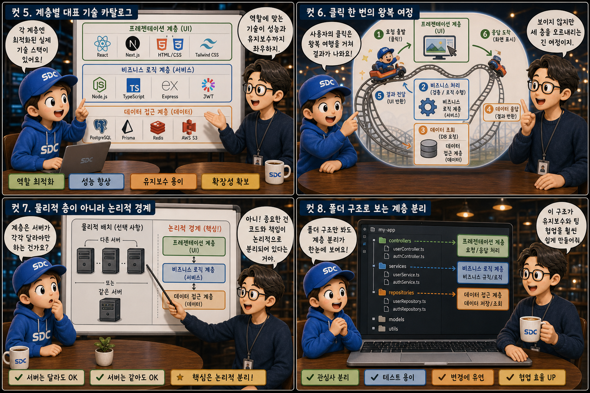
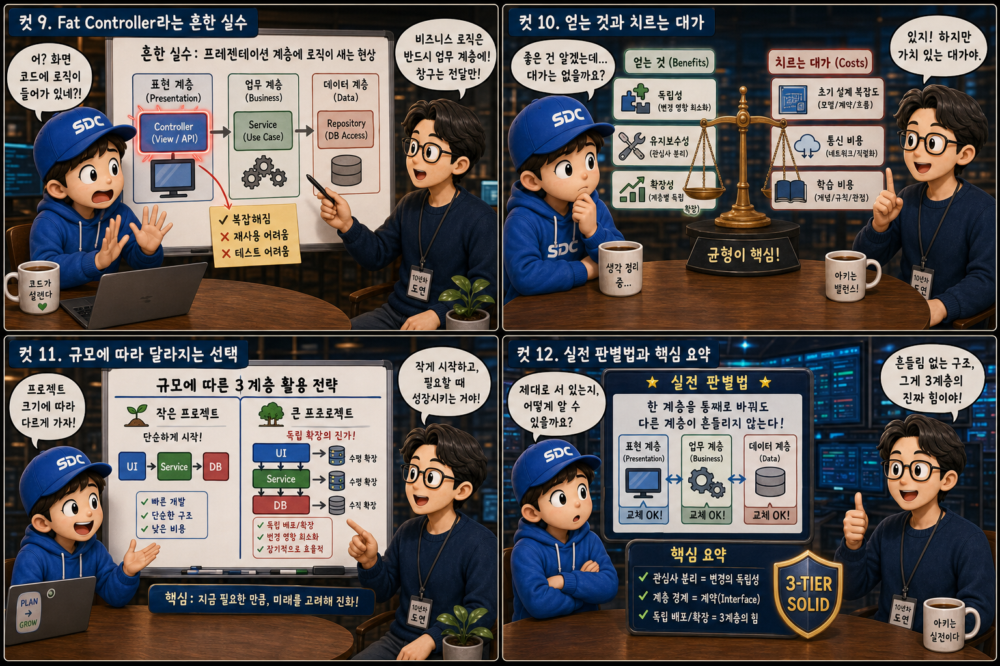

로비 · 사무실 · 창고가 있는 3층 건물의 단면도에 비유해, 서비스가 세 겹으로 나뉘는 이유를 12컷으로 풀어봅니다.
PresentationApplicationData
우리가 매일 쓰는 웹 서비스는 사용자 눈에는 하나의 매끈한 화면처럼 보이지만, 내부는 서로 다른 책임을 가진 세 개의 층으로 나뉘어 동작합니다. 사용자를 맞이하는 로비(프레젠테이션 계층), 판단과 처리가 이루어지는 사무실(애플리케이션 계층), 그리고 모든 것이 보관되는 지하 창고(데이터 계층). 이 글에서는 이 세 층이 왜 존재하고 어떻게 협력하는지를, 내부가 훤히 들여다보이는 3층 건물의 단면도 하나로 하나씩 살펴봅니다.
PART 1 / 3 — 세 층의 발견 (컷 01–04)
fourcut-01 — 컷 01 ~ 04
컷 01
왜 서비스는 세 겹으로 나뉘어 있을까
하나의 웹 서비스는 겉보기엔 매끈한 한 덩어리 같지만, 사실은 역할이 다른 세 개의 층이 쌓여 만들어진 건물이다.
내부 구조가 훤히 보이는 3층짜리 건물의 단면도를 떠올려 보세요. 1층은 유리로 된 밝은 로비, 2층은 책상과 서류철이 놓인 사무실, 지하는 선반과 상자가 정렬된 창고입니다. 우리가 매일 쓰는 웹 서비스도 이 건물과 같습니다. 눈에는 하나의 화면처럼 보이지만, 내부는 서로 다른 책임을 가진 세 개의 층으로 나뉘어 동작하죠. 이 구조를 3-tier architecture, 즉 3계층 아키텍처라고 부릅니다.
컷 02
세 층의 정체: Presentation, Application, Data
3계층은 사용자에게 보이는 층, 판단하고 처리하는 층, 저장하고 보관하는 층으로 명확히 구분된다.
프레젠테이션 계층(Presentation Layer)은 사용자가 직접 보고 만지는 화면, 즉 UI를 담당합니다. 로비에 세워진 브라우저 창과 스마트폰 안내판이 이 층의 얼굴입니다. 애플리케이션 계층(Application Layer)은 입력을 검증하고 규칙에 따라 판단하는 비즈니스 로직을 담당합니다 — 톱니바퀴와 흐름도가 놓인 2층 사무실입니다. 데이터 계층(Data Layer)은 정보를 안전하게 저장하고 꺼내주는 저장소, 원통형 데이터베이스가 정렬된 지하 창고입니다. 이 세 가지는 성격이 완전히 다른 일이기 때문에, 애초에 같은 코드 안에 섞어 두지 않는 것이 원칙입니다.
컷 03
뒤섞인 건물 vs 층이 나뉜 건물
계층을 나누지 않으면 로비 안내데스크에서 창고 재고까지 직접 뒤지는 것과 같은 혼란이 생긴다.
벽이 다 무너져 로비, 사무실, 창고 물건이 한 공간에 뒤섞인 건물을 상상해 보세요. 계층을 나누지 않은 코드가 딱 그렇습니다. 화면을 그리는 함수 안에 데이터베이스 쿼리문이 그대로 들어가 있는 — 말 그대로 UI 버튼 안에 SQL이 박혀 있는 — 경우가 흔하죠. 이렇게 되면 화면 디자인 하나를 바꾸려 해도 쿼리 로직을 건드릴 위험이 생기고, 반대로 저장소를 바꾸려 해도 화면 코드를 헤집어야 합니다. 층이 뚜렷이 나뉜 건물에서는 각 층이 정해진 문(인터페이스)을 통해서만 대화하므로, 한 층의 변경이 다른 층을 흔들지 않습니다.
컷 04
관심사의 분리 원칙
각 계층은 자신의 역할만 책임지고, 계층 간에는 정해진 통로로만 대화한다는 것이 3계층 구조의 핵심 원칙이다.
PRESENTATION
화면 표시만 맡는 층
APPLICATION
로직 판단만 맡는 층
DATA
저장과 조회만 맡는 층
separation of concerns — 관심사의 분리
각 계층은 자신의 역할만 책임지고, 계층 간에는 정해진 통로로만 대화합니다. 이를 관심사의 분리(separation of concerns)라고 부릅니다. 미니어처 건물의 화살표가 층을 건너뛰지 않고 위아래로만 오가듯, 서로의 영역을 침범하지 않는 것이 이 아키텍처가 성립하는 전제입니다.
PART 2 / 3 — 기술과 동작 원리 (컷 05–08)

fourcut-02 — 컷 05 ~ 08
컷 05
계층별 대표 기술 카탈로그
각 계층에는 그 역할에 최적화된 실제 기술 스택이 따로 존재한다.
프레젠테이션 계층은 React나 Vue 같은 프런트엔드 프레임워크로 만들고 CDN에 배포해 전 세계에서 빠르게 로딩되도록 합니다. 애플리케이션 계층은 Node.js나 Spring 같은 서버 프레임워크로 만들고 컨테이너(Docker)에 담아 배포해 독립적으로 확장합니다. 데이터 계층은 PostgreSQL이나 MongoDB 같은 데이터베이스를 관리형 서비스로 운영해 안정성과 백업을 보장합니다. 세 개의 카탈로그 타일에 각각 다른 장비가 놓이듯, 층마다 도구도 배포 방식도 다릅니다.
컷 06
클릭 한 번의 왕복 여정
사용자의 클릭 한 번은 세 층을 오르내리는 왕복 여행을 거친 뒤에야 화면에 결과로 나타난다.
사용자 클릭→프레젠테이션→애플리케이션→데이터 계층→가공 · 판단→화면 갱신
사용자가 버튼을 누르면 요청은 먼저 프레젠테이션 계층에서 애플리케이션 계층으로 전달됩니다. 애플리케이션 계층은 필요한 정보를 데이터 계층에 요청하고, 데이터 계층은 저장된 값을 돌려줍니다. 애플리케이션 계층은 이 값을 규칙에 맞게 가공한 뒤 다시 프레젠테이션 계층으로 올려보내고, 그제서야 화면에 결과가 그려집니다. 로비에서 시작된 요청이 2층 사무실을 거쳐 지하 창고까지 내려갔다가, 결과를 들고 다시 로비로 올라오는 이 왕복이 매 클릭마다 반복됩니다.
컷 07
물리적 층이 아니라 논리적 경계
계층은 서버가 물리적으로 다를 필요가 없으며, 중요한 것은 코드와 책임이 논리적으로 분리되어 있다는 점이다.
3계층 구조는 반드시 서버 세 대에 나눠 배포해야 한다는 뜻이 아닙니다. 서로 떨어진 세 동의 건물로 지을 수도 있지만, 한 건물 안에 벽으로만 층을 나눌 수도 있습니다. 작은 서비스는 한 대의 서버 안에서도 폴더와 모듈 단위로 계층을 논리적으로 분리할 수 있죠. 핵심은 물리적 위치가 아니라 코드가 서로의 책임을 침범하지 않는가입니다. 그래서 프레젠테이션 계층이 애플리케이션 계층을 건너뛰고 직접 데이터베이스에 접근하는 것 — 지하 창고에서 로비로 곧장 뚫린 사다리 — 은 계층이 물리적으로 붙어 있어도 원칙 위반입니다. 계층 건너뛰기 금지
컷 08
폴더 구조로 보는 계층 분리
잘 분리된 애플리케이션 계층의 코드는 controllers, services, repositories 같은 폴더 구조로 그 경계가 눈에 보인다.
폴더 구조 — 사무실의 서류 캐비닛
src/
├─ controllers/ // 요청을 받는 창구
│ └─ order.controller.js
├─ services/ // 비즈니스 규칙 처리
│ └─ order.service.js
└─ repositories/ // 데이터 접근 창구
└─ order.repository.js
호출 흐름 — controllers → services → repositories
// controller: 요청을 전달만 한다
app.get('/api/orders', async (req, res) => {
const result = await orderService.list();
res.json(result);
});
// service: 규칙 판단 → repository 호출const list = async () =>
orderRepository.findAll(); // DB 접근은 여기서만
애플리케이션 계층 내부에서도 역할을 더 잘게 나누는 것이 실무 관행입니다. controllers 폴더는 외부 요청을 받아들이는 창구 역할을, services 폴더는 실제 비즈니스 규칙을 처리하는 역할을, repositories 폴더는 데이터베이스 접근만 전담하는 역할을 맡습니다. 2층 사무실에 나란히 놓인 세 개의 서류 캐비닛처럼요. 이렇게 나누면 요청 처리 방식을 바꿔도 비즈니스 규칙 코드는 그대로 둘 수 있습니다.
PART 3 / 3 — 실전 감각과 요약 (컷 09–12)

fourcut-03 — 컷 09 ~ 12
컷 09
Fat Controller라는 흔한 실수
프레젠테이션 계층이나 창구 코드에 비즈니스 로직이 몰래 새어 들어가는 것이 3계층 구조에서 가장 흔한 실수다.
⚠ Fat Controller — 판단과 계산이 창구에서 다 처리되고 있음
실무에서 가장 흔한 계층 침범은 컨트롤러나 화면 코드 안에 비즈니스 로직이 그대로 쌓이는 이른바 Fat Controller 문제입니다. 창구에서 검증, 계산, 조건 분기까지 다 처리해버리면 그 로직은 재사용도 테스트도 어려워집니다.
✓ 판단은 서비스로, 창구는 전달만
판단은 반드시 애플리케이션 계층의 서비스 코드로 옮기고, 창구는 요청을 전달하고 응답을 돌려주는 역할만 남겨야 합니다.
저울과 계산기, 규칙 노트가 잔뜩 쌓여 터질 듯 부풀어 오른 로비 안내데스크를 상상해 보세요. 정작 그 일을 해야 할 2층 사무실 계단은 텅 비어 있습니다. 서류는 사무실로 올려보내고, 안내데스크는 안내만 해야 합니다.
컷 10
얻는 것과 치르는 대가
계층 분리는 독립성과 유지보수성을 주는 대신 초기 설계 복잡도와 통신 비용이라는 대가를 요구한다.
3-tier is not free — 규모가 커질 때 이득이 대가를 넘어선다
비교 축
얻는 것
치르는 대가
배포
계층별 독립 배포 가능
배포 파이프라인이 여러 개로 늘어남
확장
필요한 계층만 독립 확장
계층 간 통신 오버헤드(지연) 발생
유지보수
한 층의 변경이 다른 층을 흔들지 않음
인터페이스와 경계를 미리 설계해야 하는 복잡도
적용 시점
규모가 커질수록 이득이 커짐
작은 프로젝트에는 과한 초기 비용
계층을 분리하면 각 층을 독립적으로 배포하고 독립적으로 확장할 수 있으며, 코드의 유지보수성도 크게 좋아집니다. 하지만 그 대가로 처음 설계할 때 인터페이스와 경계를 미리 고민해야 하는 복잡도가 늘어나고, 계층 사이를 오가는 통신 자체가 약간의 지연을 만듭니다. 저울의 양쪽 접시처럼, 3계층 구조는 공짜가 아니라 규모가 커질 때 이득이 대가를 넘어서는 설계입니다.
컷 11
규모에 따라 달라지는 선택
작은 프로젝트는 계층을 단순하게 유지하고, 규모가 커질수록 계층별 독립 확장이 진가를 발휘한다.
🏠 작은 프로젝트 → 단순한 층 구조
세 계층을 개념적으로만 분리
하나의 서버, 하나의 코드베이스 유지
폴더 · 모듈 단위의 논리적 경계면 충분
🏢 대규모 서비스 → 층별 독립 확장
데이터 계층만 별도로 스케일업
애플리케이션 서버만 여러 대로 증설
미리 나눠둔 3계층 설계가 진가를 발휘
사용자 수가 적은 작은 프로젝트에서는 세 계층을 개념적으로만 나누고 하나의 서버, 하나의 코드베이스에 단순하게 유지해도 충분합니다. 하지만 트래픽이 늘어나면 이야기가 달라집니다. 지하 창고만 옆으로 증축하듯 데이터베이스만 스케일업하거나, 2층 사무실을 병렬로 늘리듯 애플리케이션 서버만 여러 대로 확장하는 식의 계층별 독립 확장이 가능해지고, 이때 3계층으로 미리 나눠둔 설계가 진가를 발휘합니다.
컷 12
실전 판별법과 핵심 요약
한 계층을 통째로 바꿔도 다른 계층이 흔들리지 않는다면 3계층 구조가 제대로 서 있는 것이다.
3계층 아키텍처가 잘 설계되었는지 확인하는 가장 실전적인 방법은 한 계층을 통째로 교체해보는 상상을 해보는 것입니다. 지하 창고를 모양이 다른 새 창고로 갈아끼워도 1층 로비와 2층 사무실이 흔들리지 않는 건물처럼 — 데이터베이스를 PostgreSQL에서 MongoDB로 바꾸거나 화면을 React에서 다른 프레임워크로 바꿀 때 다른 계층의 코드를 거의 건드리지 않아도 된다면, 그 구조는 제대로 분리된 것입니다.
Presentation · Application · Data 3계층관심사의 분리정해진 통로로만 대화논리적 분리가 핵심, 물리적 분리는 선택Fat Controller 주의규모가 커질수록 층별 확장이 빛난다
하나의 건물, 세 개의 층
프레젠테이션 계층은 사용자를 맞이하고, 애플리케이션 계층은 판단하고 처리하며, 데이터 계층은 안전하게 보관합니다. 로비와 사무실과 창고가 각자의 자리를 지키는 건물처럼, 세 층은 결국 변화에 강한 서비스를 짓기 위한 설계 원칙입니다.
presentation / application / data — layered, understood